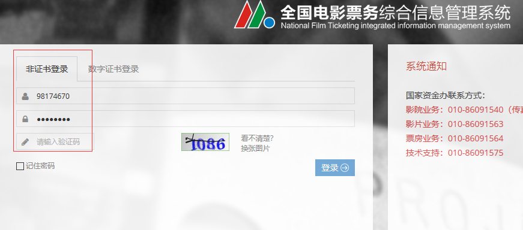
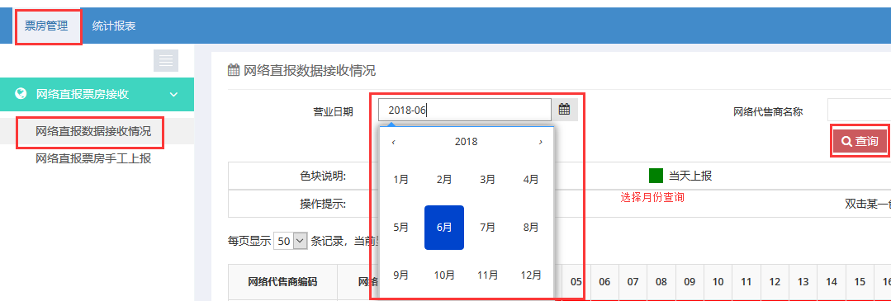
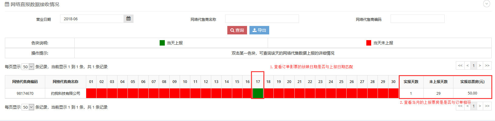
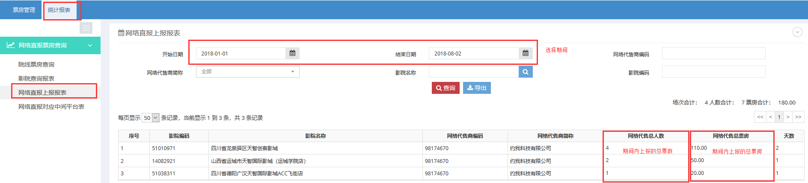
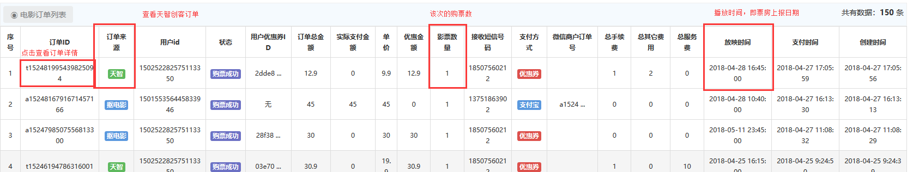
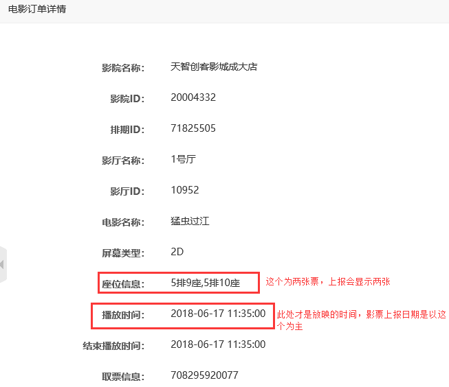

票房专资上报说明
1. 登录国家票务系统 http://www.gjdyzjb.cn
账号：
密码：

2. 选择票房管理，对照每个月的上报天数

对照上报的票数或票房总数是否相符
① 查看该月上报的日期和票房。

② 查看期间内的票数和票房



主要是对照天智创客的订单的票数，和影票的放映时间是否与票房系统上报的时间和票房相同。
3. 漏报影票补报
如果有查询到有影票是没有上报的，在电影订单列表中有补报任务。请在此处选择具体漏报的票房的订单支付期间（如8月2日票房中有影票没有上报成功，而影票是在7月16日买的，那个这里的日期就需要现在7月16日），然后点击重新上报。后台则会再次执行上报任务。补报影票数据会存在延迟（后台任务五分钟左右执行一次，上报成功票房系统也不会离开显示），等待半天或一天后可以查看影票是否有补报成功，若果没有，则可能是选择的日期不对，请仔细查看。
注：这里选择日期的期间跨度应该尽可能的小，如果有日期两个以上日期是相隔比较远，那么就进行两次重新上报操作。因为这里的补报是将你所选的期间能的所有影票重新上报的，如果数据太多，会消耗系统信息，且容易出错。所以一般建议期间选择不大于一个月。